Snakes of French Guiana
86 living snake species are recorded in French Guiana in SnakeList: 16 venomous and 70 non-venomous, from 8 families.
- 86living species
- 8families
Danger to people · tap a number to show only those snakes
Harmful = dangerously venomous + giant constrictors. HarmlessLow risk = not venomous and not a giant constrictor. Mildly venomous snakes have no serious bites to people documented. Any snake can bite.
French Guiana is a territory, not a sovereign country; SnakeList lists it as a place of its own. These totals count the unique living snake species SnakeList records in French Guiana. A species counts if it is recorded anywhere in the territory, so not every snake lives in every part of it.
In SnakeList’s checklist filters
How many of the 86 living species here each filter in the SnakeList app picks out – tap a number to show only those snakes.
Snake family5 types, 8 families
Type
Family
Habitats14 habitat groups
Habitats are estimated from where each snake is recorded and what kind of snake it is, as in SnakeList; a snake can count in several.
Characteristics16 venomous, 8 constrictors
Constrictor and Non-constrictor count only snakes whose family or genus is documented as constricting or not; the rest are not documented.
Other filters6 popular, 7 rare
- 0extinct
Species
Showing 86 species
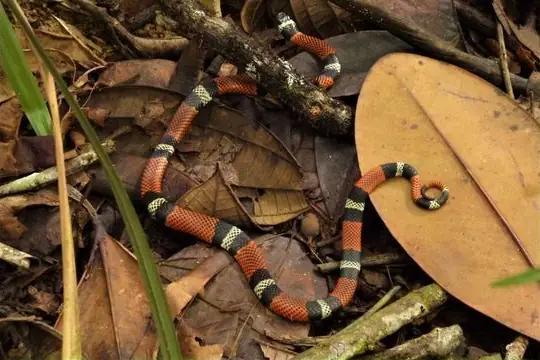
Aesculapian False Coral SnakeErythrolamprus aesculapii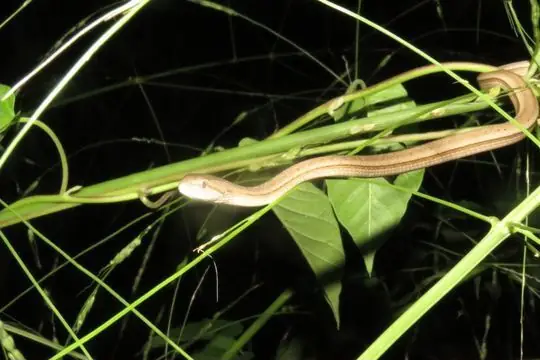
Amazon Coastal House SnakeThamnodynastes pallidus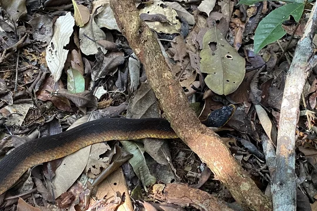
Amazon False Fer-de-lanceXenodon severus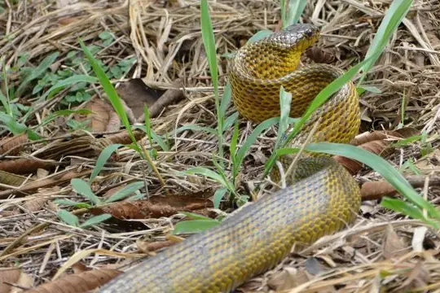
Amazon Puffing SnakeSpilotes sulphureus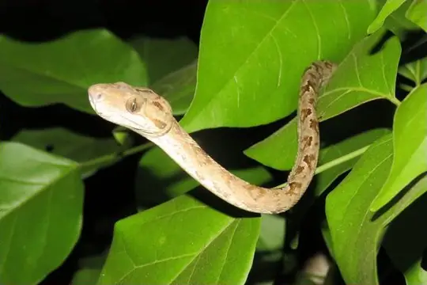
Amazon Tree BoaCorallus hortulana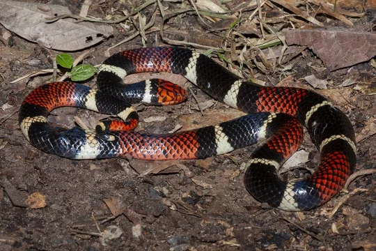
Aquatic Coral SnakeMicrurus surinamensis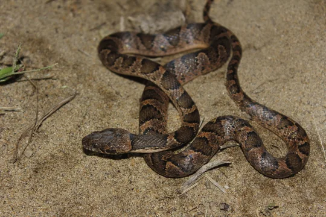
Banded Cat-eyed Snake (annulata)Leptodeira annulata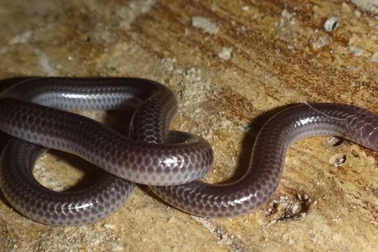
Big-scaled Blind SnakeTrilepida macrolepis Boa ConstrictorBoa constrictor
Boa ConstrictorBoa constrictor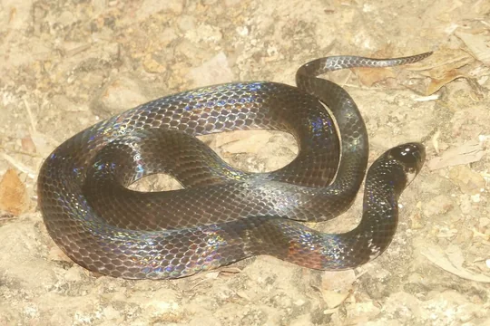
Boie's Ground SnakeAtractus badius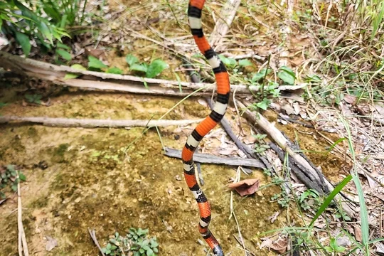
Broadhead Ground SnakeAtractus latifrons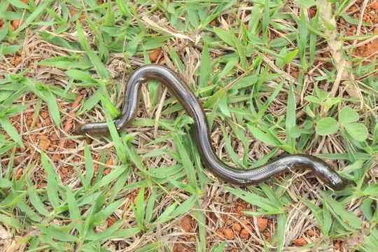
Brongersma's Worm SnakeAmerotyphlops brongersmianus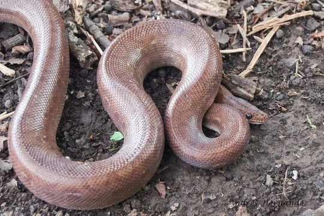
Brown Rainbow BoaEpicrates maurus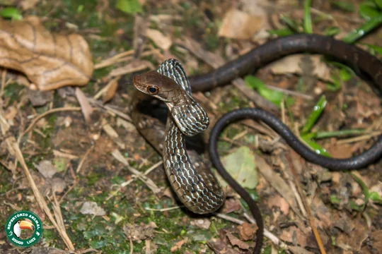
Brown SipoChironius fuscus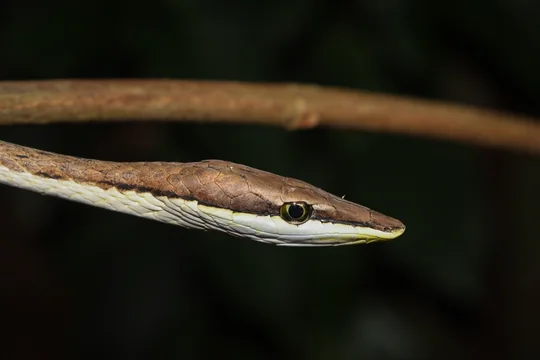
Brown VinesnakeOxybelis aeneus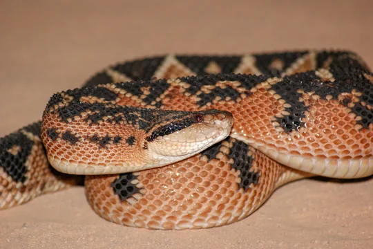
BushmasterLachesis muta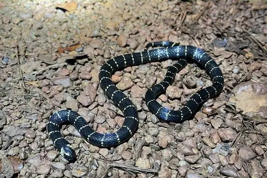
Carib Coral SnakeMicrurus psyches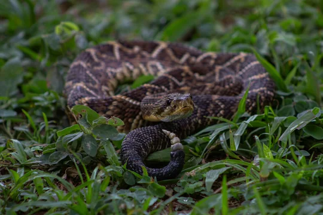
Cascabel RattlesnakeCrotalus durissus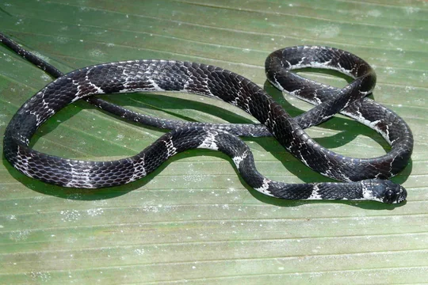
Catesby's Snail-eaterDipsas catesbyi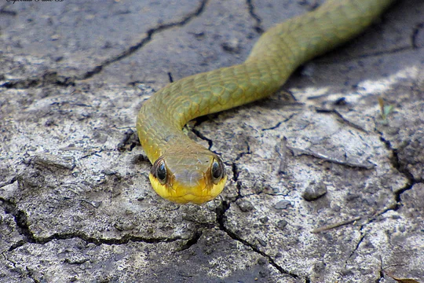
Central Sipo (quadricarinatus)Chironius quadricarinatus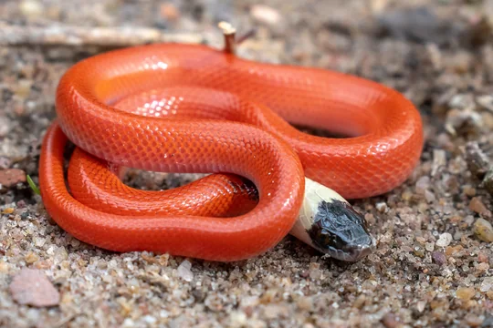
Coal SnakePseudoboa neuwiedii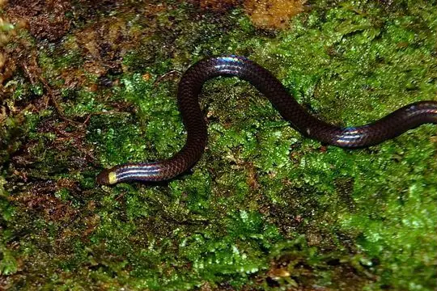
Collared Blind SnakeHabrophallos collaris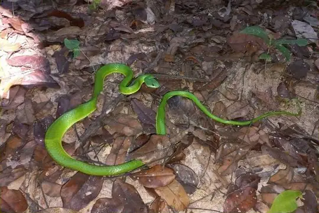
Common Green RacerChlorosoma viridissimum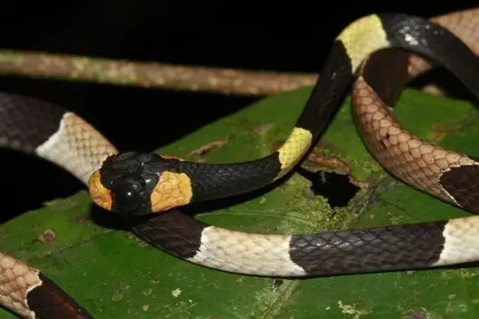
Cope's Snail-eaterDipsas copei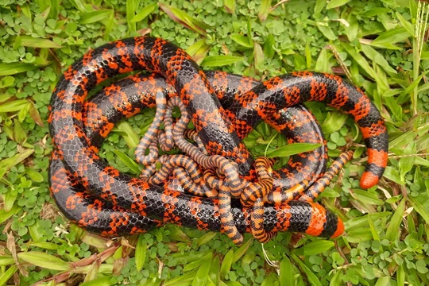
Coral Cylinder SnakeAnilius scytale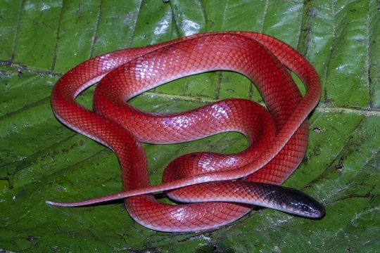
Crowned False BoaPseudoboa coronata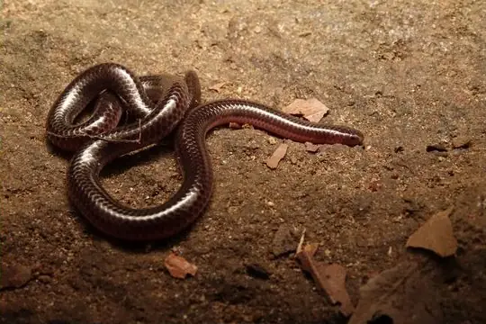
Dainty Blind SnakeTrilepida dimidiata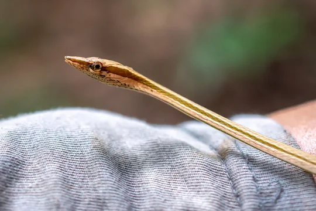
Diurnal Vine SnakeXenoxybelis argenteus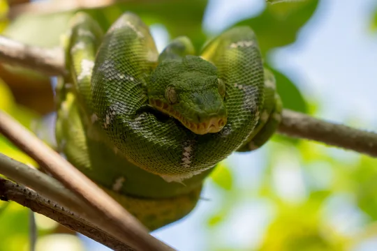
Emerald Tree BoaCorallus caninus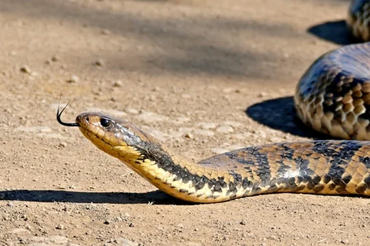
False Water CobraHydrodynastes gigas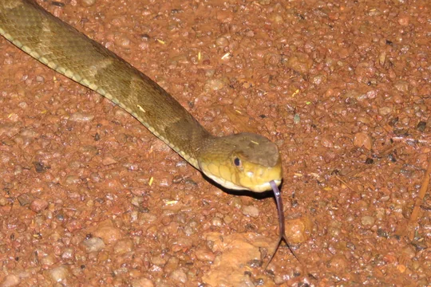
Fer-de-LanceBothrops atrox- No photo yetFilippi's Ground SnakeAtractus favae
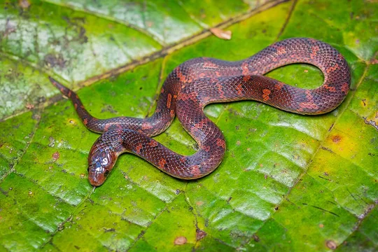
Flaming Ground SnakeAtractus flammigerus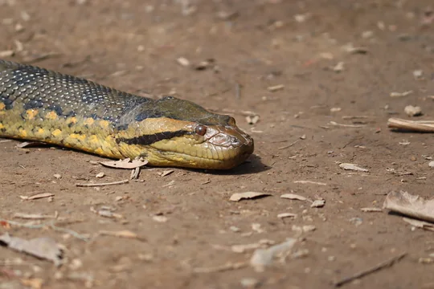
Green AnacondaEunectes murinus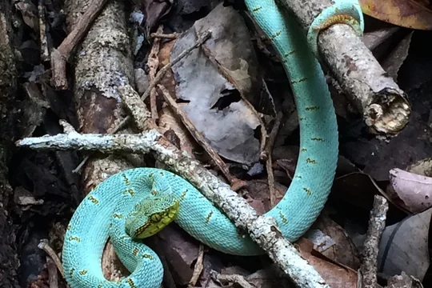
Green JararacaBothrops bilineatus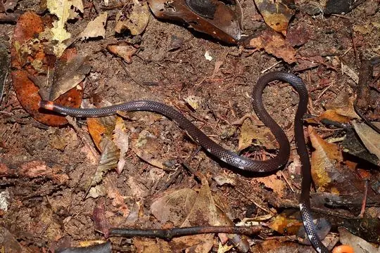
Guyana Blackback Coral SnakeMicrurus collaris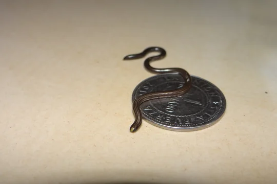
Guyana Blind SnakeEpictia tenella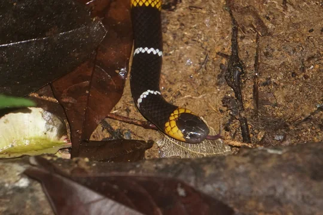
Hemprich's Coral SnakeMicrurus hemprichii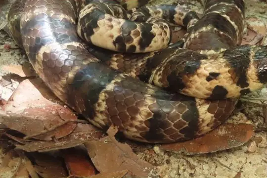
Herrmann's Water SnakeHydrodynastes bicinctus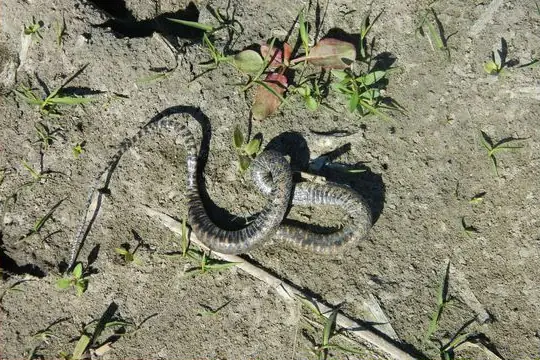
Leopard KeelbackHelicops leopardinus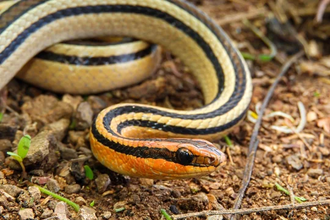
Lined Ground SnakeLygophis lineatus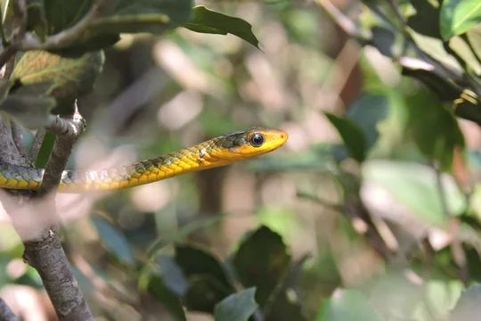
Linnaeus' SipoChironius exoletus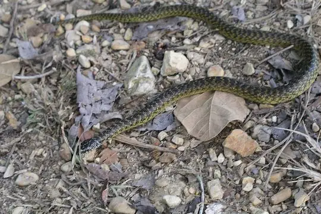
Mangrove SnakeErythrolamprus cobella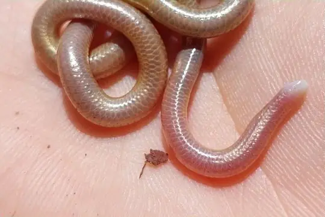
Mato Grosso Blind Snake (cupinensis)Siagonodon cupinensis Military Ground SnakeErythrolamprus miliaris
Military Ground SnakeErythrolamprus miliaris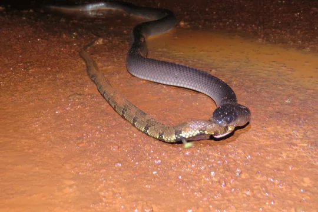
Mountain KeelbackHelicops angulatus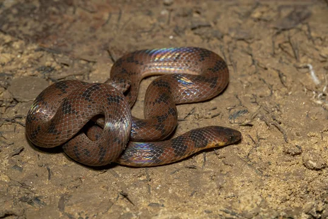
Neckband Ground SnakeAtractus torquatus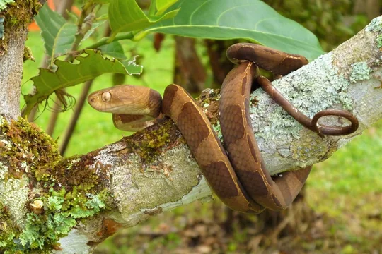
Neotropical Snail-eater (indica)Dipsas indica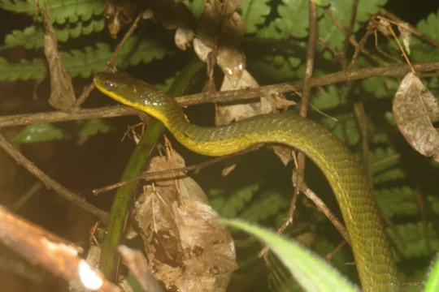
Northeastern Puffing SnakePhrynonax polylepis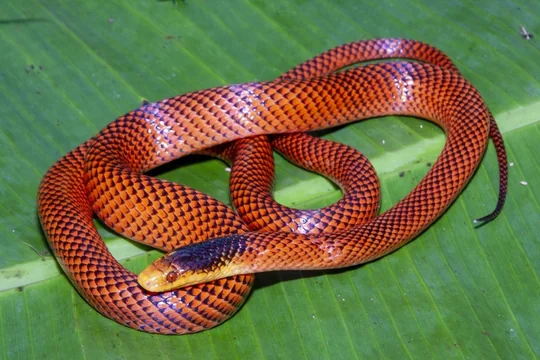
Northern Calico SnakeOxyrhopus occipitalis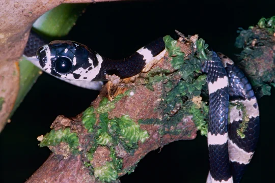
Northern Snail-eaterDipsas pavonina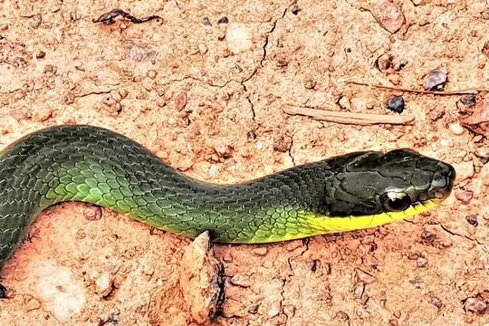
Northern Woodland RacerDrymoluber dichrous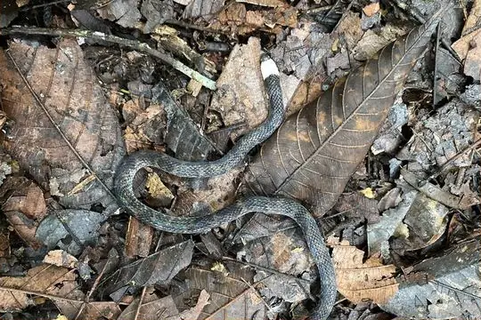
Pachacamac Ground SnakeAtractus snethlageae- Painted Coral SnakeMicrurus corallinus
- Panama Spotted Night SnakeSiphlophis cervinus
- Parrot SnakeLeptophis ahaetulla
- Pará Coral SnakeMicrurus paraensis
- Piraja's LanceheadBothrops pirajai
- Rainbow BoaEpicrates cenchria
- Royal Ground SnakeErythrolamprus reginae
- Schach's Ground SnakeAtractus schach
- Schlegel's Golden SnakeCercophis auratus
- Short Ground SnakeErythrolamprus breviceps
- Short-nosed GroundsnakeTaeniophallus brevirostris
- Sipo (carinatus)Chironius carinatus
- South American Coral SnakeMicrurus lemniscatus
- South American Pond Snake (plicatilis)Pseudoeryx plicatilis
- Speckled Forest Pit ViperBothrops taeniatus
 Ternetz's Blind SnakeLiotyphlops ternetzii
Ternetz's Blind SnakeLiotyphlops ternetzii- Triangle Water SnakeHydrops triangularis
 Trinidad Blind SnakeTyphlophis squamosus
Trinidad Blind SnakeTyphlophis squamosus- Trinidad CoralsnakeMicrurus diutius
- Tropical Flat SnakeSiphlophis compressus
- Troschel's Pampas SnakePhimophis guianensis
- Tschudi's False Coral SnakeOxyrhopus melanogenys
- Tucuman ThreadsnakeEpictia albipuncta
- Variegated Snail-eaterDipsas variegata
- Velvet SwampsnakeErythrolamprus typhlus
- Wagler's Blind SnakeEpictia albifrons
- Wagler's SipoChironius scurrulus
 Wagler's SnakeXenodon merremii
Wagler's SnakeXenodon merremii- Wucherer's Ground SnakeXenopholis scalaris
- Zidok's Ground SnakeAtractus zidoki
- No photo yetAtractus dapsilis
- Taeniophallus nicagus
- Thamnodynastes ramonriveroi
No snakes in French Guiana match.
French Guiana’s snakes in numbers
- Families: Colubridae 55, Elapidae 8, Leptotyphlopidae 7, Boidae 6, Viperidae 6, Anomalepididae 2, Aniliidae 1, Typhlopidae 1.